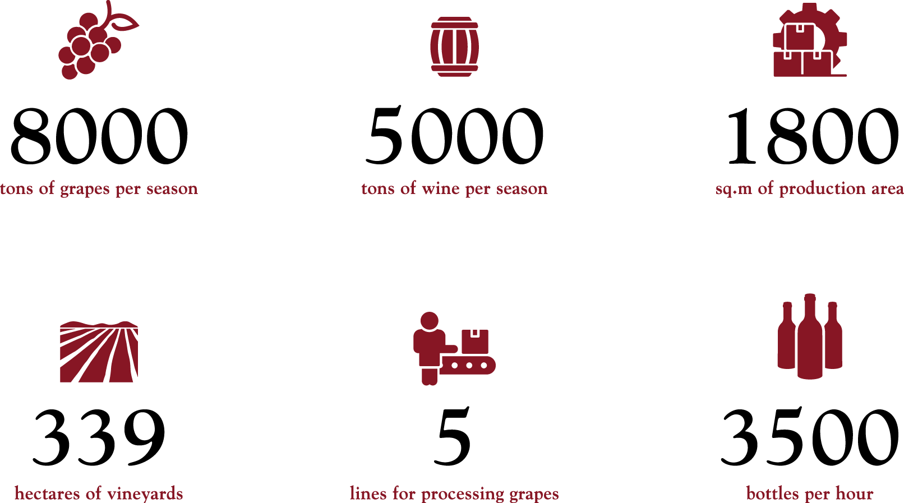

Wine Making
Our wines
Bulk wine
Our company is one of the major suppliers of bulk wine in the
Ukrainian market. The most popular varieties from Lambrovka are
Chardonnay, Cabernet Sauvignon, Merlot, Bastardo, and Muscats. A
considerable proportion of varietal and sparkling wines from the most
popular brands in Ukraine are based on our bulk wines!
Bottled Wines
Wines from Lambrovka are well known to Ukrainian consumers. In
particular, the wines under such trademarks as "Golden Vine",
"Company", and "Old Bulgarian" won many medals and diplomas in
Ukrainian and international competitions.

Our Vineyards


About